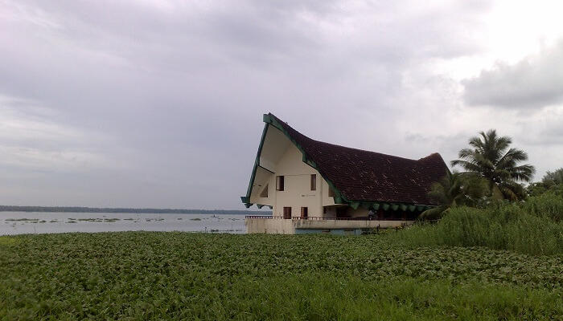

Kottayam is blessed with nature’s bounty in abundance. It is the pride of God’s own country with its beautiful churches, charming nearby hill stations, significant temples, and refreshing waterfalls. The Western Ghats and the backwaters add to the beauty to this undisturbed, rustic town of Kerala. The numerous plantations – rubber, coconut, palm, spices and the flora make for lush green landscapes that are totally stunning. All these factors, aside from it being strikingly beautiful, make it as one of the must visit destinations in Kerala. Though a handful, the tourist places in Kottayam guarantee a peaceful retreat. It is not one of most famous towns of Kerala, but is no less beautiful than the likes of Munnar, Alleppey or Kanyakumari. If you gotta see it to believe it, here’s a round up of quaint and charming places to visit in and around Kottayam.
Top Places To Visit In Kottayam
Vaikom – Home To Many Secluded Haunts
Vaikom is one of the popular places around Kottayam mainly due to its variety of tourist attractions. It is home to some of the most scenic backwaters of Kerala like Kumarakom and houses rich historical places and heritage temples that add an old-world charm to it. Its serenity and simplistic beauty are unbeatable. If you are looking for some ‘me or us’ time, Kottayam is littered with several secluded, yet calming haunts where you can let sit back and simply enjoy the view.
Nattakom & Panachikkad – Glimpse Into The Rustic Village

Two of the most offbeat places to visit in Kottayam, Nattakom and Panachikkad are the secluded villages located mere few kilometers from main city. These villages are known for their scenic landscapes, migratory birds, and remarkable reservoirs. Some of the best temples in the area are based in these villages. Villages of heritage as well as religious importance, Nattakom and Panachikkad are must visit places near Kotayam. Visit them if you’re looking for a secluded desi getaway in the midst of nature and its warm natives.
Kottathavalam – Popular For Short Road Trips

Located about 70 km from Kottayam, Kottathavalam is a popular hill station and a favorite among those looking for a long drive through the mountaineous roads. The terrain has rock cut trails, passing through which you may feel a sense of exhilaration and thrill. Many small and huge temples adorn the pathways. In fact just a little detour takes you to a 1,000 year old temple. Kottathavalam is a perfect mixture of attractions like roads perfect for a long drive, beauty, spirituality and thrill to draw you in. This is one of the top tourist places in Kottayam for one day trip.